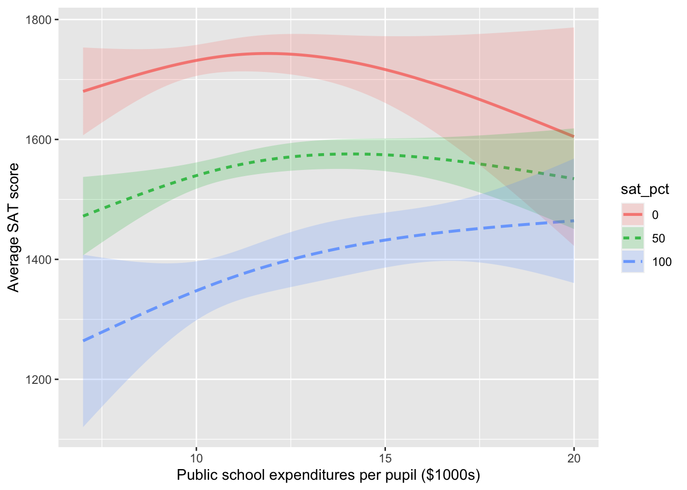

| sex | width |
|---|---|
| G | 9.0 |
| G | 8.5 |
| G | 9.0 |
| G | 9.5 |
| B | 8.6 |
| B | 8.4 |
| B | 8.8 |
| B | 9.4 |
22 Covariates
Dr. Mary Meyer is a statistics professor at Colorado State University. In 2006, she published an article recounting an episode from family life:
When my daughter was in fourth grade, I took her shopping for dress shoes. I was disappointed in the quality of girls’ shoes at every store in the mall. The shoes for boys were sturdy and had plenty of room in the toes. On the other hand, shoes for girls were flimsy, narrow, and had pointed toes. In spite of the better construction for boys, the costs of the shoes were similar! For children the same age, boys had shoes they could run around in, while girls’ shoes were clearly for style and not comfort.
Upon complaining about this state of affairs, I was told by sales representatives in two stores that boys actually had wider feet than girls, so needed wider shoes. Being very skeptical, I thought I would test this claim.
We will return to Dr. Meyer’s project in a little bit. However, for now, imagine how this situation might be addressed by someone who still needs to develop good statistical thinking skills. We will call this imagined protagonist “Mr. Shoebuyer.” Since the salesmen claimed that girls’ feet are narrower than boys, Mr. Shoebuyer heads out to measure the widths of girls’ and boys’ shoes.
A shoe store provides a convenient place to measure the widths of many different shoe styles. Mr. Shoebuyer gets to the shoe store, heads to the children’s section, and starts measuring. For each shoe on display, he records the shoe width and whether the shoe is for girls or boys. Here are his data:
Once back home, Mr. Shoebuyer uses his calculator to find the mean width of the shoes in each group. His results surprise him:
| sex | mean width |
|---|---|
| Girls | 9.0 cm |
| Boys | 8.8 cm |
Mr. Shoebuyer happens to be your uncle. He knows you are taking a statistics course and asks you to check his arithmetic. Putting on a statistical thinking hat to the effect size of sex on shoe width, you note the absence of a confidence interval. This omission is easy to fix.
Shoebuyer_data %>% lm(width ~ sex, data=.) %>% conf_interval()| term | .lwr | .upr |
|---|---|---|
| (Intercept) | 8.2857603 | 9.3142397 |
| sexG | -0.5272448 | 0.9272448 |
Your uncle is at the table at Thanksgiving break. “Sorry, Uncle, but you don’t have nearly enough data to conclude that girls’ feet are wider than boys’.” Translating the confidence interval into plus-or-minus format, you point out that the difference between the sexes is \(0.2 \pm 0.8\) cm. “You’ll need enough data to get that 0.8 margin of error down to something like 0.2.” You also point out that there might be a better place to collect data than a shoe store. “It’s the feet, not the shoes, that you want to look at.”
Aware of these pitfalls, Dr. Meyer worked with the third- and fourth-grade teachers at her daughter’s school to collect data. Being a statistical thinker, she thought about what data would illuminate the matter before carrying out the data collection. Her data, a sample of size \(n=39\), are recorded in the KidsFeet data frame.
lm(width ~ sex, data = KidsFeet) %>% conf_interval()| term | .lwr | .upr |
|---|---|---|
| (Intercept) | 8.9758882 | 9.4041118 |
| sexG | -0.7125476 | -0.0990313 |
In plus-or-minus format, this confidence interval is \(-0.4 \pm 0.3\). Whatever the format, Dr. Meyer’s data provides some evidence that girls’ feet are narrower than boys’.
As a statistical thinker, Dr. Meyer knows that even though the foot width is the original quantity of interest, other factors might play a role in the system. For example, boys’ feet might trend longer or shorter than girls’ feet. This possibility should be taken into account by looking at the effect size of sex on width, holding length constant. After all, a shoe buyer first tells the salesperson their foot length (or “size”); the salesperson then brings shoes of that size to try on.
lm(width ~ sex + length, data=KidsFeet) %>% conf_interval()| term | .lwr | .upr |
|---|---|---|
| (Intercept) | 1.1048182 | 6.1775184 |
| sexG | -0.4947759 | 0.0297408 |
| length | 0.1202348 | 0.3218151 |
Although sex is the explanatory variable of primary interest to Dr. Meyer’s question, she knows to include other explanatory variables that might play a role. Such explanatory variables, not of direct interest, are called “covariates.” Dr. Meyer’s statistical expertise led her to consider possible covariates before collecting her data and took the trouble of measuring both foot length and width.
The confidence interval on the sexG coefficient includes zero when length is taken into account. Dr. Meyer’s little study provides evidence that even if girls’ shoes tend to be narrower than boys’, the feet inside them have about the same shape for both sexes.
All other things being equal
The common phrase “all other things being equal” is a critical qualifier in describing relationships. To illustrate: A simple claim in economics is that a high price for a commodity reduces the demand. For example, increasing the price of heating fuel will reduce demand as people turn down thermostats to save money. Nevertheless, the claim can be considered obvious only with the qualifier all other things being equal. For instance, the fuel price might have increased because winter weather has increased the demand for heating compared to summer. Thus, higher prices may be associated with higher demand. Therefore, increased price may not be associated with lower demand unless holding other variables, such as weather conditions, constant.
In economics, the Latin equivalent of “all other things being equal” is sometimes used: “ceteris paribus”. So, the economics claim would be, “higher prices are associated with lower demand, ceteris paribus.”
Although the phrase “all other things being equal” has a logical simplicity, it is impractical to implement “all.” So instead of the blanket “all other things,” it is helpful to consider just “some other things” to be held constant, being explicit about what those things are. Other phrases along the same lines are “taking into account …” and “controlling for ….” Those additional variables that are to be considered are called “covariates.
Example: Covariates and Death
This news report appeared in 2007:
Heart Surgery Drug Carries High Risk, Study Says. A drug widely used to prevent excessive bleeding during heart surgery appears to raise the risk of dying in the five years afterward by nearly 50 percent, an international study found. The researchers said replacing the drug—aprotinin, sold by Bayer under the brand name Trasylol—with other, cheaper drugs for a year would prevent 10,000 deaths worldwide over the next five years.
Bayer said in a statement that the findings are unreliable because Trasylol tends to be used in more complex operations, and the researchers’ statistical analysis did not fully account for the complexity of the surgery cases. The study followed 3,876 patients who had heart bypass surgery at 62 medical centers in 16 nations. Researchers compared patients who received aprotinin to patients who got other drugs or no antibleeding drugs. Over five years, 20.8 percent of the aprotinin patients died, versus 12.7 percent of the patients who received no antibleeding drug. [This is a 64% increase in the death rate.] When researchers adjusted for other factors, they found that patients who got Trasylol ran a 48 percent higher risk of dying in the five years afterward. The other drugs, both cheaper generics, did not raise the risk of death significantly. The study was not a randomized trial, meaning that it did not randomly assign patients to get aprotinin or not. In their analysis, the researchers took into account how sick patients were before surgery, but they acknowledged that some factors they did not account for may have contributed to the extra deaths. - Carla K. Johnson, Associated Press, 7 Feb. 2007
The report involves several variables. Of primary interest is the relationship between (1) the risk of dying after surgery and (2) the drug used to prevent excessive bleeding during surgery. Also potentially important are (3) the complexity of the surgical operation and (4) how sick the patients were before surgery. Bayer disputes the published results of the relationship between (1) and (2) holding (4) constant, saying that it is also essential to hold variable (3) constant.
The total relationship involves a death rate of 20.8 percent of patients who got aprotinin versus 12.7 percent for the patients taking the generic drugs: an increase in the death rate by a factor of 1.64. However, when the researchers looked at a partial relationship (holding constant patient sickness before the operation), the effect size of aprotinin on mortality was less: a factor of 1.48. In other words, the model death ~ aprotinin shows a 64% increase in the death rate, but the model death ~ aprotinin + sickness shows a slightly smaller increase in death rate: 48%. The difference between the two estimates reflects doctors being more likely to give aprotinin to sicker patients.
The story’s last paragraph states that the choice of patients receiving aprotinin versus the generic drugs was not made at random. Some readers may find this reassuring. Why in the world would anyone prescribe a drug at random? The point, however, is to select randomly who gets which drug among the patients for whom the drugs would be appropriate. The phrase “randomized trial” used in the paragraph means specifically an experiment in which one treatment or the other—aprotinin versus the generic drugs—is assigned at random. The virtues of experiment and the vital role of random assignment are detailed in Lesson 24.
“Significant” has a specialized meaning in statistical language. It is not a synonym for “important.” See Lessons 36 through 38
Letting things change as they will
Using covariates in models enables the relationship between a response and an explanatory variable to be described ceteris paribus, that is, “all other things being equal.” Another phrase used in news stories is “after adjusting for ….” This is appropriate since the all in “all other things” is, in reality, refers only to those particular factors used as the covariates in the model. So, Dr. Meyer’s foot width results might be stated in everyday language as, “After adjusting for foot width, she found no difference in the widths of girls’ and boys’ feet.”
Not including covariates in a model amounts to “letting other things change as they will.” In Latin, this is “mutatis mutandis.” In the foot-width example, the model width ~ sex looks at the differences in foot width for the two sexes. However, sex is not the only thing associated with foot width. The model width ~ sex ignores all other factors than sex; it compares boys and girls mutatis mutandis, that is, letting other things change as they will. In this case, comparing boys and girls involves not just the possible differences in foot width but also the differences in other factors such as foot length and body weight.
Example: One change can bring another
I was once involved in a budget committee that recommended employee health benefits for the college where I worked. At the time, college employees who belonged to the college’s insurance plan received a generous subsidy for their health insurance costs. Employees who did not belong to the plan received no subsidy but were given a modest monthly cash payment. After the stock market crashed in 2000, the college needed to cut budgets. One proposal called for eliminating the cash payment to employees who did not belong to the insurance plan. Proponents of the plan claimed that this would save money without reducing health benefits. I argued that this claim was an “all other things being equal” analysis: how expenditures would change assuming the number of people belonging to the insurance plan remained constant. In reality, however, the policy change would play out mutatis matandis; the loss of the cash payment would cause some employees, who currently received health benefits through their spouse’s health plan, to switch to the college’s health plan. That is what happened, contributing to an overall increase in healthcare expenses.
Example: Spending and student performance
To illustrate how covariates set context, consider an issue of interest to public policy-makers in many societies: How much money to spend on children’s education? State lawmakers in the US are understandably concerned with the quality of public education provided. However, they also have other concerns and constraints and constituencies who give budget priority to other matters.
In evaluating their various trade-offs, lawmakers could benefit by knowing how increased educational spending will shape educational outcomes. What can available data tell us? Unfortunately, there are various political constraints that work against states adopting and publishing data on a standard, genuine measure of educational outcome. Instead, we have high-school graduation rates, student grades, and other non-standardized data. These data might have some meaning but can also reflect system gaming by administrators and teachers, for which there is little systematic data.
Although imperfect, college admissions tests such as the ACT and SAT provide consistent data between states. For example, figure 22.1 shows the average SAT score in 2010 in each state versus expenditures per pupil in public elementary and secondary schools. Layered on top of the data is a flexible linear model (and its confidence band) of SAT score versus expenditure.
The overall impression given by the model is that the relationship is negative, with lower expenditures corresponding to higher SAT scores. However, the confidence band is broad; it is possible to find a smooth path with almost zero slope through the confidence band. Either way, this graph does not support the conventional wisdom that higher spending produces better school outcomes.

Of course, other factors play a role in shaping education outcomes: for instance, poverty levels, parental education, and how the educational money is spent (higher pay for teachers or smaller class sizes? administrative bloat?).
At first glance, it is tempting to ignore these additional factors. For instance, we may not have data on them. Moreover, as our interest is in understanding the relationship between expenditures and education outcomes, we are not directly concerned with the additional factors. However, the lack of direct concern does not imply that we should ignore the factors but that we should do what we can to “hold them constant”.
To illustrate, consider the fraction of eligible students (those in their last year of high school) who take the college admission test. This fraction varies widely from state to state. In a poor state where few students go to college, the fraction can be tiny (Alabama 8%, Arkansas 5%, Mississippi 4%, Louisiana 8%). In some other states, the large majority of students take the SAT (Maine 93%, Massachusetts 89%, New York 89%). In states with low SAT participation rates, the students who take the test tend to be those applying to schools with competitive admissions. Such strong students will get high scores. In contrast, the scores in states with high participation rates reflect both strong and weak students. Consequently, the scores will be lower on average than in the low-participation states.
Putting the relationship between expenditure and SAT scores in the context of the fraction taking the SAT is accomplished with the model SAT ~ expenditure + fraction rather than just SAT ~ expenditure. figure 22.2 shows a model with fraction as a covariate.

Note that the effect size of spending on SAT scores is positive when the expenditure level is less than $10,000 per pupil. Notice as well that when the fraction taking the SAT is tiny, the average scores do not depend on expenditure. This flat relationship suggests that, among elite students, state expenditure does not make a discernible difference. Perhaps the college-bound students in such states have other educational resources to draw on.
The relationship shown in figure 22.1 is genuine. However, so is the very different relationship seen in figure 22.2. How can the same data be consistent with two utterly different displays? The answer, perhaps unexpectedly, has to do with the connections among the explanatory variables. Whatever the relationship between an individual explanatory variable and the response variable, the appearance of that relationship will depend on which covariates the modeler chooses to include.